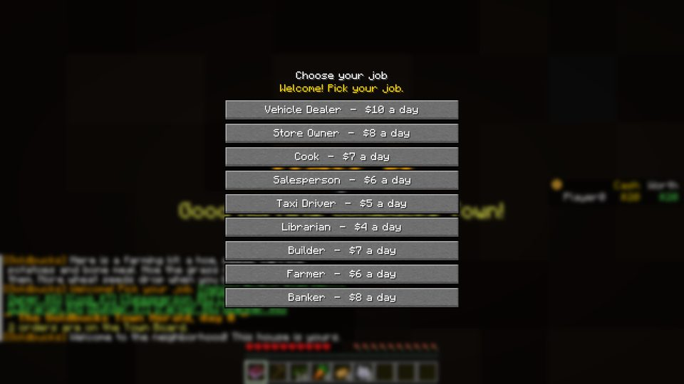
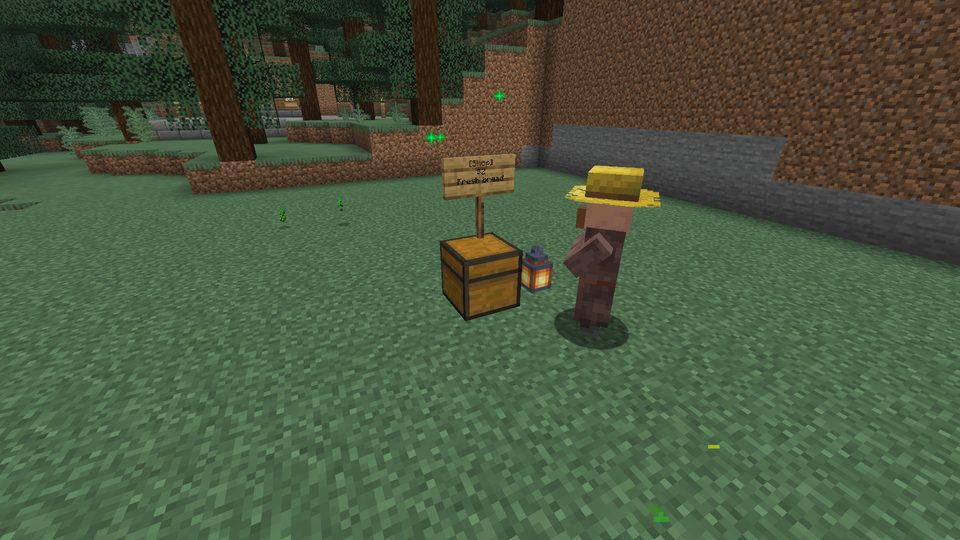
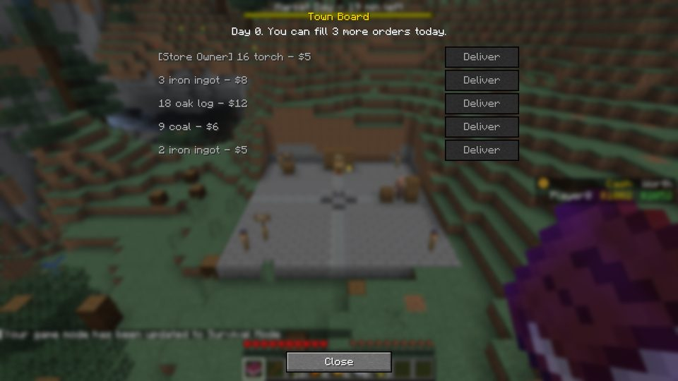
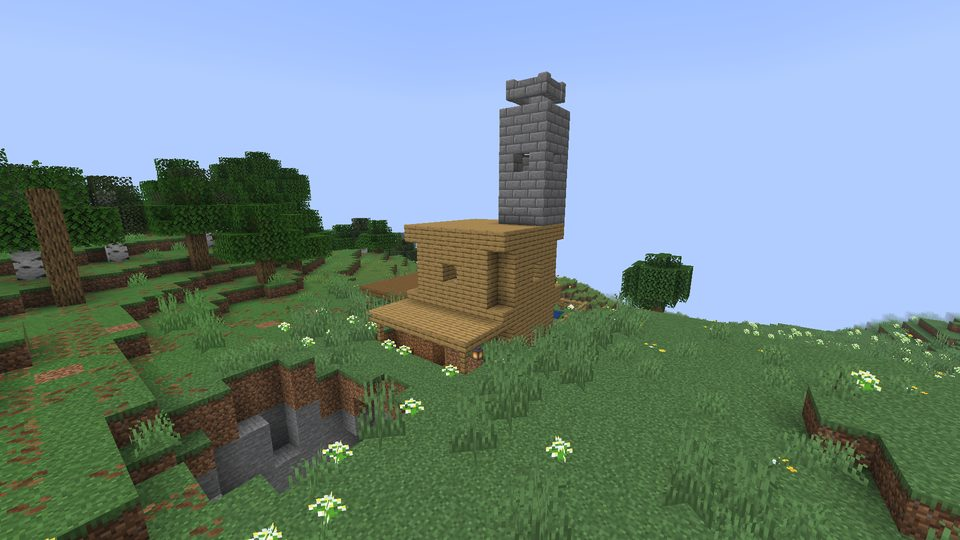

Pick a job, open a shop and get paid every Minecraft day. Fill orders on the Town Board, sell to townsfolk, run for Mayor and save up for a bigger house. Made for playing with family and friends.
Everyone gets a house, a job and $20. You gather and craft everything yourself, as usual. There is no way to win: the fun is in running a business and watching the side bar to see who is worth the most.
Jobs and payday
Everyone has a job to do.
Choose a job on your first day. Do its task once each Minecraft day and you are paid at dawn.
Nine jobs, from Taxi Driver to Banker, each with its own pay
Work your job to become Skilled, Expert and then Master
Every level pays more and unlocks a perk

Shops
Open a shop. Set your price.
Claim a plot, put out a chest, and write [Shop] and a price on a sign. The game tells you straight away whether your shop is open.
Other players buy with a right-click
Townsfolk walk over and buy if the price is fair, and tell you if it isn't
Spend down to -$100 on credit, paid back from your wages

The town square
Something to do every day.
The square next to spawn is where the town happens, whether or not anyone else is online.
The Town Board posts orders that pay, and they count as your daily task
The Herald brings the morning news: who sold what, and what's on
Market Day every week, plus Treasure Hunts, Tourist Days and more

The Town Store
Save up for something big.
Spend your Goldbucks at the Town Store. Everything you keep counts toward your net worth on the side bar.
House upgrades: a porch, garden, pool, stable, second floor and tower
A bigger plot, pets, a name colour and a banner for your shop
Fireworks, adverts, and your own headline in the news

A Mayor
Run on a promise and win the vote. The Mayor sets the tax rate, names the town and declares a holiday.
The bank
Savings are safe from the weekly tax and earn interest once someone is the town's Banker.
Town events
Fishing Season, Lost Pet, Tourist Day and more start at dawn, with a bar at the top of the screen.
Taxi rides
Passengers wait at the Taxi Stand. Pick them up by boat and take them where their name tag says.
Achievements
A Goldbucks tab in the advancements screen, and each one pays a small reward.
Friendly by design
No monsters and no dying, so younger players can focus on building their business.
The same Goldbucks version on every computer that joins
For the host
Only in the worlds you choose
Goldbucks is off until you switch it on. On the Create World screen, open More › Game Rules, search gold and turn Goldbucks on. In a world you already have, type:
/goldbucks on
/host settings opens a screen with every number and switch, and checks your changes before saving. Prices, store items, orders and events are data files you can change with a data pack.
FAQ
Questions
I installed it but nothing happens.
Goldbucks is off until you switch it on in a world. When creating a world, open More › Game Rules, search for gold and turn Goldbucks on. In a world you already have, the host types /goldbucks on. /goldbucks status says whether it is on.
My friend can't join my world.
Every computer needs the same version of Minecraft, Fabric API and Goldbucks. Download the newest Goldbucks on each one and remove any older Goldbucks jar from the mods folder.
Can I change the prices or the pay?
Yes. The host types /host settings for pay, taxes, limits and switches. Item values, store items, orders and events are data files: copy them from the mod jar into a data pack in the world's datapacks folder, change them, and type /reload.
Will it change my other worlds?
No. Goldbucks does nothing in a world unless it is switched on there. Switching it off with /goldbucks off keeps everyone's money and jobs in case you switch it back on.
Does it work on a server or with Bedrock?
It is made for Java Edition, with one player hosting a world opened to LAN. It is not tested on dedicated servers, and it does not work on Bedrock.
How do I know the download is the real file?
Every download comes from this project's releases on GitHub. Compare the file's SHA-256 checksum with this one, which is also on the release page: